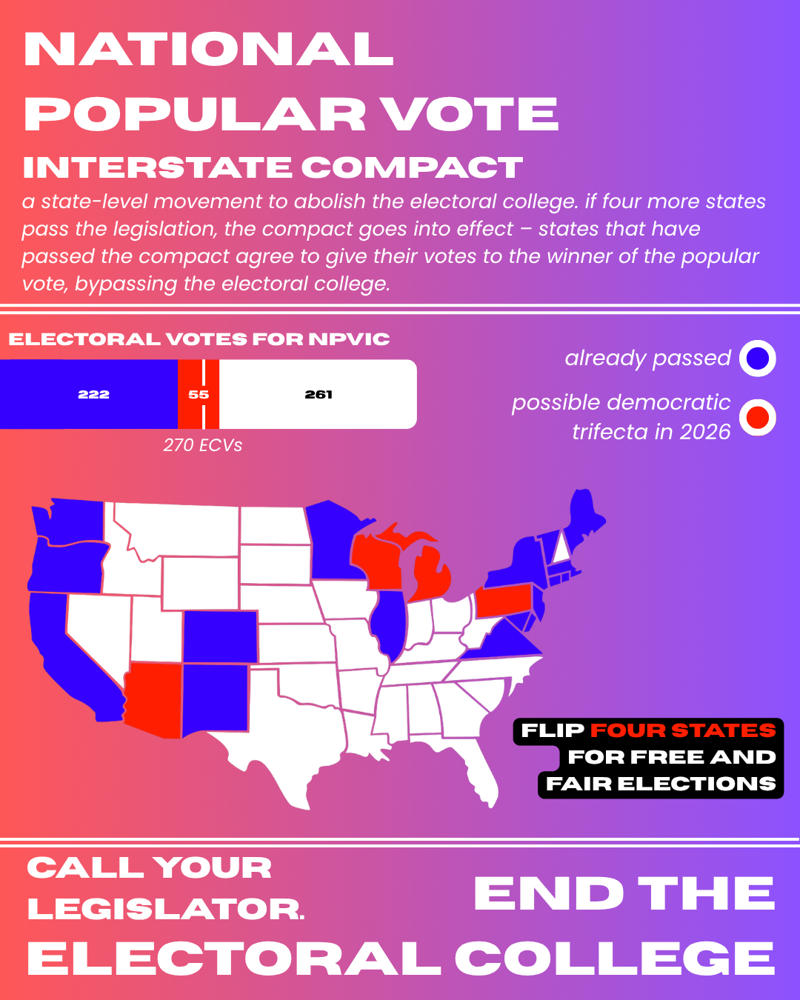

MPA Candidate — Graphic Designer
George Weiler Design and Research
I'm an MPA candidate at Brown University researching election policy and voting rights, with campaign communications experience on the ground. My design work grew out of the same question research did: how language and image shape political persuasion.



Design
Logo, brand, and marketing work. What it's like to work with me.
02Research
Public policy & political analysis. Thesis, papers, CV.
03All Work
Search and filter everything, including where the two meet.